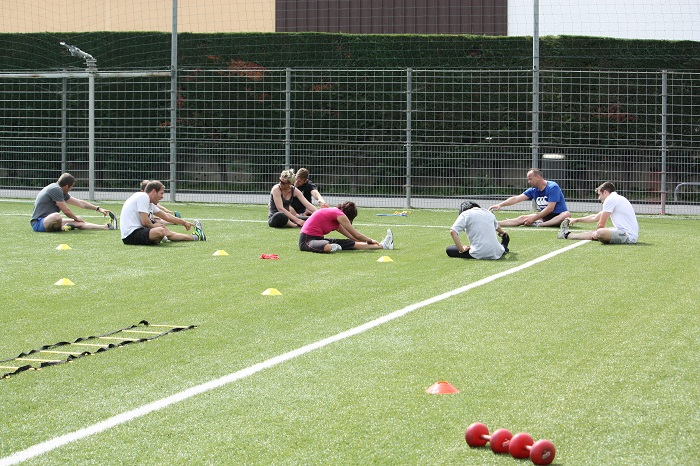

Le coach Maxime Salinas propose du coaching à distance ou du coaching privé, adapté à vos besoins. À domicile, sur votre lieu de travail ou sur le lieu de votre choix, le coaching s'offre à vous à des prix raisonnables.
Grâce à son expérience d'ancien sportif de haut niveau et en tant que préparateur physique, il propose différentes activités telles que :Pour exercer une activité physique en toute sécurité, Maxime vous accompagne tout au long de vos séances afin de vous faire progresser à votre rythme et selon vos objectifs.
Maxime Salinas est né le 25 septembre 1989 à Pau, dans les Pyrénées Atlantiques. Issu d'une famille de sportifs, dès l'âge de 5 ans, il se passionne pour le judo et le rugby qu'il exerce au sein de sa ville Oloron Sainte Marie.
Très vite, il présente de réelles aptitudes aux compétitions, remportant plusieurs titres. C'est en 2006, après seulement 12 ans de pratique qu'il devient ceinture noire. Deux ans plus tard, ne pouvant plus concilier les deux sports, il décide d'arrêter le judo pour se consacrer uniquement au rugby, sa deuxième passion. Alors qu'il n'est encore que junior, Maxime, devient champion régional de rugby à XV. Dès les années suivantes, il participe aux championnats de France de rugby à 7, compétition qu'il ne gagnera jamais, s'inclinant par deux fois en finale. À l'âge de 19 ans, il intègre l'équipe seniors de son club, jouant pour la première fois en fédérale 1 (niveau semi- professionel).
Quelques années plus tard, riche d'un bon parcours sportif et soucieux de nouveaux défis, il quitte son Sud Ouest natal pour la côte d'Azur. Désireux de devenir préparateur physique, Maxime, décide de passer un BPJEPS spécialisé dans les métiers de la force et de la forme. Durant ses études en alternance, il exerce comme coach assistant au sein du plus important groupe de la Côte d'Azur, FITLANE. En parallèle il signe au Stade Niçois, avec qui il devient vicechampion de France de rugby à XV. En effet après une saison exemplaire entachée seulement d'une défaite, le ''bout de bois'' semble encore lui échapper.
Diplôme en poche, Maxime, décide de devenir autoentrepreneur au sein de son organisation SPORT FOR LIFE. Deux mois après, il devient le préparateur physique en chef du Stade Laurentin Rugby, ainsi que de la section féminines du Stade Niçois. Son activité principale étant la préparation physique, il exerce également comme coach sportif auprès des particuliers. Sa philosophie s'articule autour du dépassement de soi et de la capacité à puiser dans ses ressources.
Pour un coaching privé, 4 semaines minimum sont conseillées pour suivre un programme de façon optimale. Les séances ont lieu à domicile et en extérieur ou sur le lieu de votre choix.
1 séance par semaine / 30 euros la séance
4 semaines 120 euros
2 séances par semaine / 25 euros la séance
4 semaines 200 euros
3 séances par semaine / 20 euros la séance
4 semaines 240 euros
de 2 à 4 personnes, la séance est à 20 euros
1 séance par semaine
4 semaines à 80 euros par personne
2 séances par semaine
4 semaines à 160 euros par personne
Votre coach est déclaré "service à la personne" en mode prestataire, ce qui vous permet de bénéficier d'une réduction ou d'un crédit d'impôt à hauteur de 50% des sommes versées. N'hésitez pas à vous rapprocher de votre coach pour d'éventuels renseignements.
Ce programme concerne les sportifs de haut niveau ayant des tests à effectuer ou des personnes qui préparent des examens et concours (écoles, pompier, police, armée..). Le coach Maxime Salinas pratique également des préparations collectives ou individuelles pour des clubs (rugby, judo, fottball, boxe, handball, athlétisme..).
Le travail se fera en extérieur et en salle de musculation. Le coach propose des séances d'1h30.
- Améliorer vos performances sportives
- Explosivité, vitesse, force, coordination
- Préparation à un test, une compétition ou une saison sportive.
PACK 1 semaine intensive, 3 séances, 120 euros
PACK 2 semaines intensives, 6 séances, 240 euros
PACK 1 mois intensif, 12 séances, 480 euros
Samedi matin de 9h à 10h30
Samedi matin de 10h45 à 12h45
Libre accès
La séance : 5 euros
4 séances + 1 offerte : 20 euros
Le mois illimité : 50 euros
pour tous renseignements n'hésitez à pas à contacter votre coach
